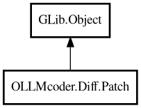

Patch
Object Hierarchy:

Description:
public class Patch : Object
Represents a patch operation with line numbers.
Patches can be: - ADD: Inserts new_lines at start_line - REMOVE: Removes old_lines starting at start_line - REPLACE: Removes old_lines
and inserts new_lines at start_line
Content:
Properties:
- public string[] new_lines { get; set; }
Lines to add (empty array for REMOVE operations).
- public string[] old_lines { get; set; }
Lines to remove (empty array for ADD operations).
- public PatchOperation operation { get; set; }
Operation type: ADD, REMOVE, or REPLACE.
- public int start_line { get; set; }
Starting line number (1-based) where the patch applies.
Creation methods:
- public Patch (PatchOperation op, int start_line, string[] old_lines, string[] new_lines)
Constructor.
Inherited Members:
All known members inherited from class GLib.Object
- @get
- @new
- @ref
- @set
- add_toggle_ref
- add_weak_pointer
- bind_property
- connect
- constructed
- disconnect
- dispose
- dup_data
- dup_qdata
- force_floating
- freeze_notify
- get_class
- get_data
- get_property
- get_qdata
- get_type
- getv
- interface_find_property
- interface_install_property
- interface_list_properties
- is_floating
- new_valist
- new_with_properties
- newv
- notify
- notify_property
- ref_count
- ref_sink
- remove_toggle_ref
- remove_weak_pointer
- replace_data
- replace_qdata
- set_data
- set_data_full
- set_property
- set_qdata
- set_qdata_full
- set_valist
- setv
- steal_data
- steal_qdata
- thaw_notify
- unref
- watch_closure
- weak_ref
- weak_unref